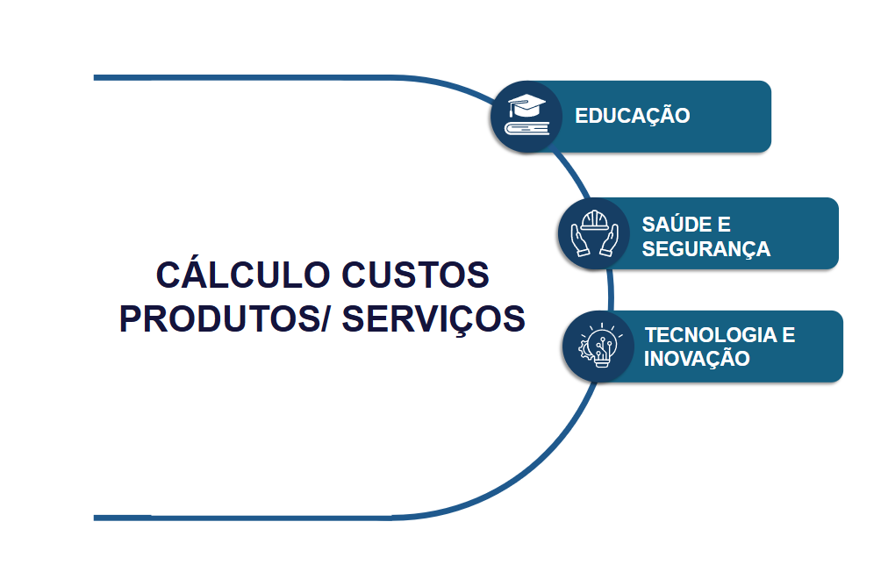

Sobre Mim
Especialista em Dados e Business Intelligence com experiência em arquitetura de dados, Data Warehouses, Data Lakes, Power BI, SQL Server, Python e Analytics. Atuação em projetos estratégicos envolvendo custos por absorção, recomendação de candidatos, integração de APIs, governança de dados e construção de plataformas analíticas corporativas.
Competências
Analytics
- Power BI
- DAX
- Storytelling
- KPIs Executivos
Data Engineering
- SQL Server
- PostgreSQL
- Oracle
- Pentaho
- PySpark
Arquitetura
- Data Warehouse
- Data Lake
- SSAS
- Modelagem Dimensional
Governança
- LGPD
- Qualidade de Dados
- Documentação
- Microsoft Fabric
Projetos em Destaque

Sistema Corporativo de Custos por Absorção
Plataforma corporativa responsável pela distribuição de custos indiretos e despesas compartilhadas através de regras de rateio implementadas em procedures SQL Server.
Tecnologias:
SQL Server • Power BI • DAX • Procedures • Data Warehouse
Ver Projeto

Sistema de Recomendação de Vagas e Candidatos
Modelo analítico para recomendação inteligente de candidatos e vagas utilizando técnicas de similaridade e machine learning.
Tecnologias:
Python • SQL • Machine Learning • Power BI
Em Construção

Arquitetura Data Lake Bronze / Silver / Gold
Implementação de arquitetura moderna para ingestão, tratamento e disponibilização de dados corporativos.
Tecnologias:
PySpark • SQL Server • Data Lake • ETL
Em Construção
Experiência Profissional
2025 - Atual
Especialista em Análise de Dados e BI Sênior
2023 - 2025
Analista de Business Intelligence Sênior
2022 - 2025
Analista de Business Intelligence
2021 - 2022
Analista de Business Intelligence
Certificações
- Microsoft PL-300 - Power BI Data Analyst Associate
- Microsoft DP-600 - Fabric Analytics Engineer Associate
- LGPD
- Cisco Cybersecurity